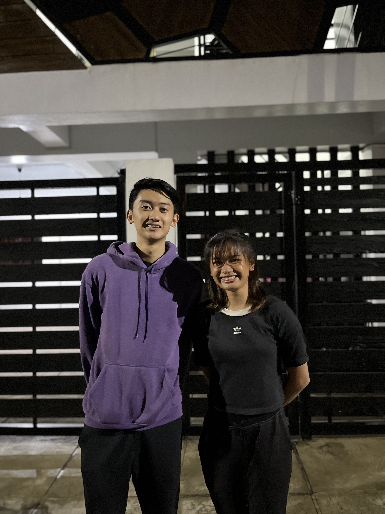
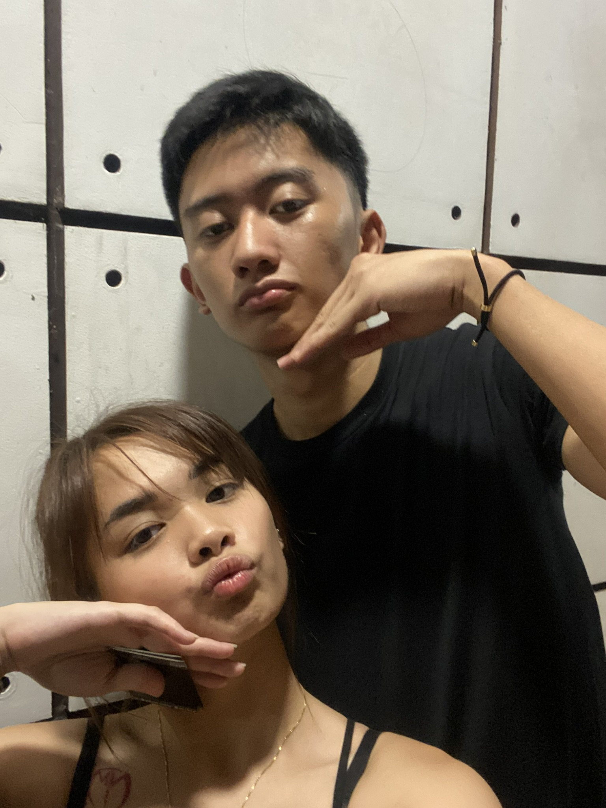

First Picture:
To my star, my perfect silence. Thank you for everything love. It has been a blast since i met you. I had the best moments of my 2023 with you. Every moment we are together i cherish it. I will never trade those moments for anything or anyone. When i was at my lowest you have shown me what it feels like to feel loved again. And when i display my bad habits you always scolded me and always told me to be better and in my restless nights, i think of you and that helps me to feel at peace. I never have told you this but i always had a deep appreciation for what we are and what we make ourselves be. We tell each other to do better and that is why i love us. I love us because we push ourselves to be better. I love us because we give ourselves time to grow and to not let each other hold each other back. It will be a long and difficult journey but in the end. I know everything will work out. Always remember to think lightly of yourself babe and deeply of the world. The world is cruel and the world is unforgiving. We will encounter a lot of situations that will test us of our resilience. But remember this babe. I am always not around but always strive to be indefatigable. I will always not be around during breaks or long vacations when we are with our families. So let's always appreciate the time we have personally. So listen closely, learn to be stoic. Stoic as in not complaining about the things that are inevatible. Things that happen because they happen. And people being them accept the world as it is, and learn to accept the things that happen for what they are and to not worry about the things that would not prove any significance or any value to you. Learn to not worry about the things you cannot control and to only focus on what you can control. That is the point of all the advices i give to you babe and so that you can go through difficult situation even when your alone. The point of all these words i told you is me wanting and hopefully am providing what is best for you and the point of us growing with each other and not letting each other holding one another bacl from reaching their best version of themselves. Always strive to be the best version of yourself babe. Always be honest with what you feel and always know when you are wrong. These key point will prove to you the deep appreciation in life and to serve as a reminder we live once and that we must live it with joy. I love you my Abby, i have always cherished and often looked back on august 17 and the time in between and now. I have seen how better you became as a person and kahit si mama napansin niya. Sobrang masiyahin mo na tao babe and i love that part about you, if i have a chance to be given a superpower or ability. I will, in a heartbeat. Choose the ability of having you see the world through my eyes to make you see for yourself just how special and how you mean the world to me. I love you my Abby. Always take care of your self.
Latest picture: